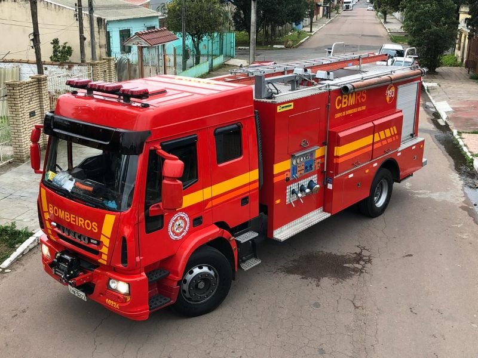

ABT-0536
Km Atual: 1234567 km
Último condutor: SD Leonardo

AR-0468
Km Atual: 111222 km
Último condutor: SD Valentim

ABT-7987
Km Atual: 987654 km
Último condutor: SD Bolzan
ATP-1216
Km Atual: 121212 km
Último condutor: 1ºSGT Soares
ATP-9312
Km Atual: 234234 km
Último condutor: SD Severo
ATP-6028
Km Atual: 456789 km
Último condutor: SD Hertz